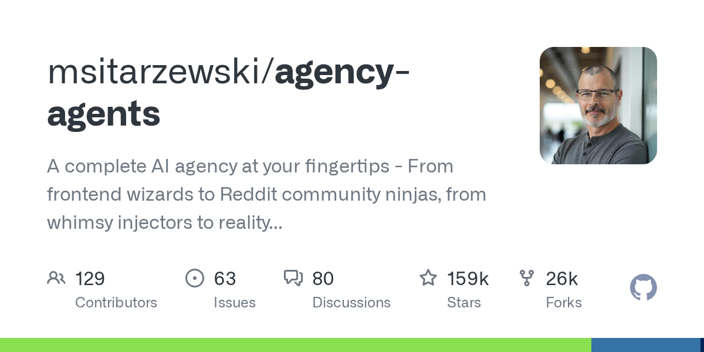

Instagram｜147 個「AI 員工」一鍵部署？Agency Agents 的角色庫、安裝方式與導入界線

一句話摘要
影片中的「147 個 AI 員工一鍵部署」是吸睛說法；可驗證的核心是：**Agency Agents 提供大量按職能整理的 agent persona／prompt 檔與工作流程，並用腳本轉換成多種 coding-agent 工具所需的格式。** 它可以減少從零撰寫角色指令的摩擦，但不會自動補上資料權限、工具配置、驗收標準或人類責任。
Reel 可見內容：以畫面為準，不把宣傳語當功能保證
Instagram 帳號 `carllee2077` 的 Reel 長約 32.9 秒，文案寫「你怎么知道147个AI员工我一键部署了？」。本次取樣約第 3、15、28 秒，屬畫面式擷取，並非完整逐字稿：
- **約第 3 秒**：標題寫「一鍵部署147个AI员工」，展示 GitHub 的 `msitarzewski/agency-agents` repository；可見 `academic`、`design`、`engineering`、`marketing`、`product` 等職能資料夾。
- **約第 15 秒**：展示「跨境電商銷售專家」角色文件，畫面中可辨識 Lazada、蝦皮、Temu、TikTok Shop 等名稱。這表示可為特定工作設計角色範本，**沒有**直接證明已部署並執行大量自主 agent。
- **約第 28 秒**：畫面列出 Cursor、Aider、Windsurf、Gemini CLI、OpenCode、Kimi Code 等工具，並展示 `./scripts/convert.sh` 和 `./scripts/install.sh`。
第一方資料確認：這個專案實際提供什麼？
GitHub repository `msitarzewski/agency-agents` 的 README 將其定位為一個「完整 AI agency」角色庫：每個角色包含人格／記憶、核心任務、工作範圍、交付物、流程與成功指標。它是可閱讀、可 fork、可改寫的指令與檔案集合，而非一套替使用者取得所有外部帳號權限的雲端人力服務。
本次擷取時可直接確認：
- 專案採 **MIT License**；仍應在導入當下查看 LICENSE 原文與相依套件授權。
- README 列出 230+ specialized agents，數字會隨版本增減，不能與影片的「147」當成固定規格對照。
- 原生或轉換後可支援 Claude Code、GitHub Copilot、Antigravity、Gemini CLI、OpenCode、Cursor、Aider、Windsurf、OpenClaw、Qwen Code、Kimi Code、Codex、Osaurus、Hermes 等多個工具。這是 README 的支援清單，實際可用性仍依工具版本、作業系統與本機設定而定。
- `./scripts/convert.sh` 用於產生各工具格式的 integration files；`./scripts/install.sh` 會掃描已安裝工具、讓使用者選擇要安裝的目標。先閱讀腳本內容、確認寫入路徑，再執行。
「AI 員工」正確的導入模型
把這類檔案看成可版本控制的 **角色規格（role specification）** 比較精確：它能定義任務邊界、輸出格式、流程與檢核，但 agent 仍可能誤解需求、呼叫錯誤工具、讀取敏感內容或產出未驗證結論。專業角色名稱不是資格認證，也不代表交付物已經過真人簽核。
一個安全的起點是：
- 從官方 GitHub clone 或下載，不執行社群留言、影片說明或未知鏡像提供的安裝命令。
- 先挑 **一個角色** 與非敏感測試 repo，讀完其角色檔、外部工具使用方式與輸出要求。
- 對寫入、部署、寄信、發文、購買、刪除等行動保留人工確認；用最小權限帳號與 allowlist。
- 若使用安裝腳本，先檢查將寫入的 `~/.claude`、`~/.codex`、`.cursor`、`.opencode` 或其他路徑，避免覆蓋既有設定或把機密寫進 repo。
- 以具體驗收衡量價值，例如「完成一個小修正且測試通過」、「輸出一份可引用的市場研究」，不要用角色數量或星數代替成果評估。
- 將角色檔視為程式碼審查對象：保留變更紀錄、檢查 prompt injection 風險、禁止角色自行讀取長效 token、Cookie 或私鑰。
與既有工具整合時的提醒
影片和 README 中出現多個 coding-agent 工具，並不表示可以將所有工具同時安裝、共享上下文或取得相同效果。不同工具的設定格式、模型帳號、資料留存、網路存取和計費規則各異。建議每次只啟用一個整合目標，驗證其讀寫範圍、生成檔案和回復流程後，再逐步擴大。
來源與查核界線
- Reel 只用於確認社群作者的敘事、影片長度、畫面與可見腳本名稱。
- 專案定位、授權、支援工具與腳本名稱由上游 GitHub README、LICENSE 標示與 GitHub API 交叉核對。
- 本次未在本機執行該專案的轉換或安裝腳本，未將角色實際部署到任何工具，也未驗證其任一角色的產出品質、成本或安全性。
原始連結
- Instagram Reel：https://www.instagram.com/reel/DXPF5GrEjD9/
- Agency Agents GitHub：https://github.com/msitarzewski/agency-agents
- LICENSE：https://github.com/msitarzewski/agency-agents/blob/main/LICENSE
來源擷取紀錄：`source-archive/2026-10-11-instagram-carllee2077-agency-agents.json`